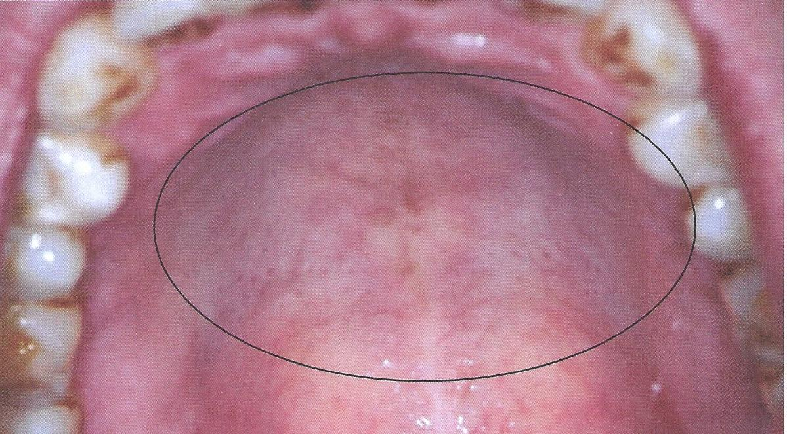

การอักเสบของรูเปิดต่อมน้ำลายขนาดเล็กที่เพดานปากจากการสูบบุหรี่
พบในผู้สูบบุหรี่จัด
เริ่มแรกพบลักษณะเป็นสีแดง ต่อมาเปลี่ยนเป็นสีขาวซีด
เนื่องจากมีการหนาตัวของชั้นผิวเยื่อบุเพื่อตอบสนองต่อการอักเสบ
และมีจุดแดงตามรูเปิดของต่อมน้ำลายขนาดเล็ก บริเวณเพดานปาก
รอยโรคจะหายไปหากงดบุหรี่ ภายใน 2 สัปดาห์